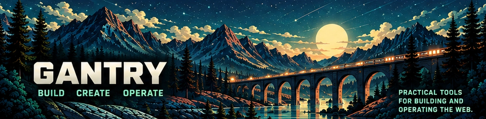

Coding agent
Cortex
Work directly with real projects, terminals and workflows.

Gantry is a suite of focused tools spanning creation, compilation, development, backends, monitoring and operations. Each project is useful independently; shared conventions and integrations make the seams disappear when you use several together.
Install the smallest tool that solves the problem and keep the common path nearly effortless. As requirements grow, Gantry should reveal first-class fleet, clustering, distributed and cross-project workflows without making a local single-user install feel like enterprise infrastructure.
Work directly with real projects, terminals and workflows.
Self-hosted web IDE with multi-user support and integrated agent workflows.
Collections, auth, files, jobs, functions, webhooks and an HTTP API.
Monitor machines and services with agent-based telemetry and fleet direction.
Check websites, APIs, DNS and TLS from the public side of your stack.
Fast, focused templating and site generation for real projects.
Edit website assets privately in your browser with no account required.
Build
Nift, Markup++, Jsonic++, Minify++, TSCC and JS++ help produce web applications.
Backend
Trestle provides data, auth, files, jobs, functions and APIs.
Develop
Cortex and Warden cover agent-assisted and self-hosted development.
Operate
Watchpost and Webfleet observe infrastructure and public services.
Focused desktop, CLI and library projects round out Gantry without turning it into one monolith.
Learn the common my.* access model, service lifecycle commands, desktop launchers, deployment patterns and how Gantry projects fit together.
Zero effort for the common case. Progressive disclosure as requirements grow. First-class DX and UX at every level.